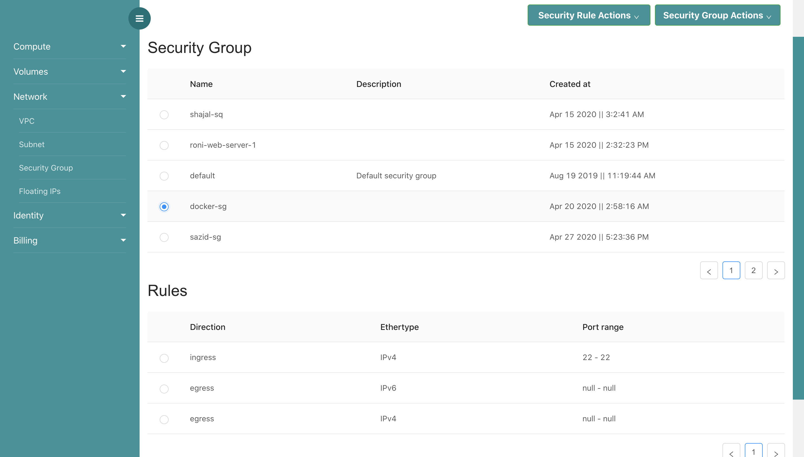
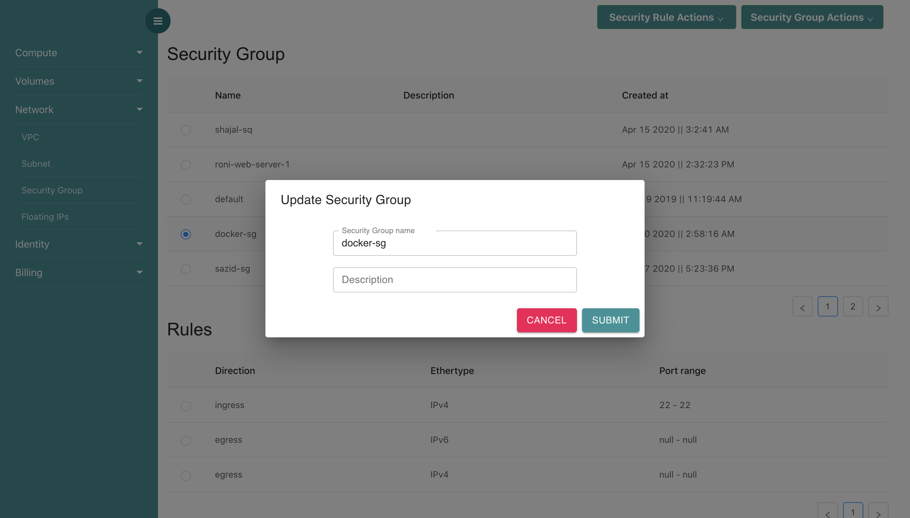
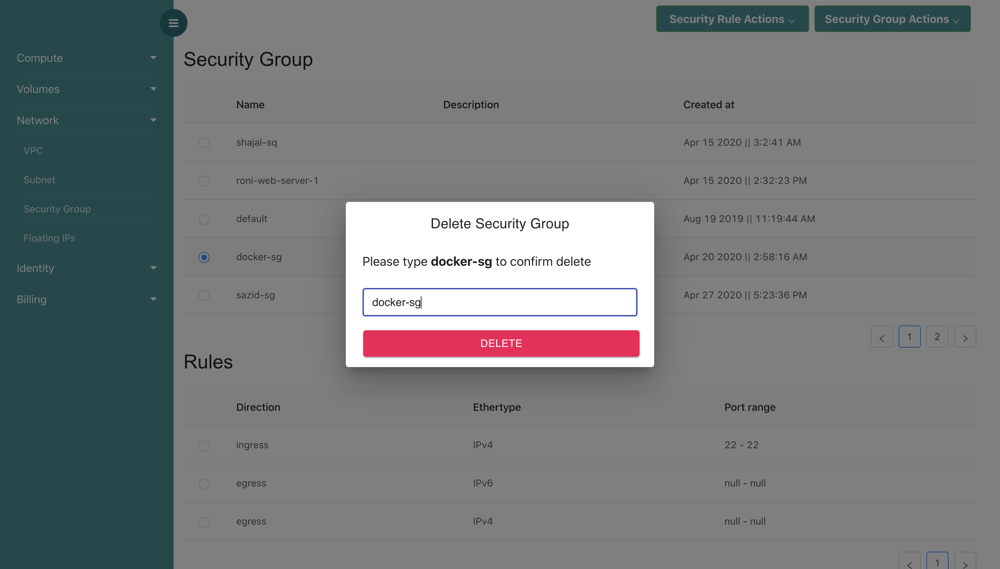
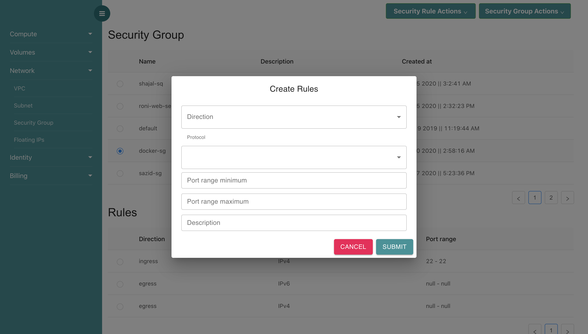
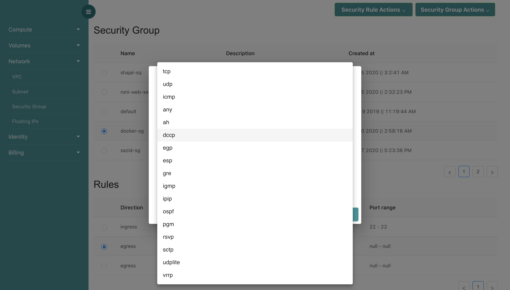
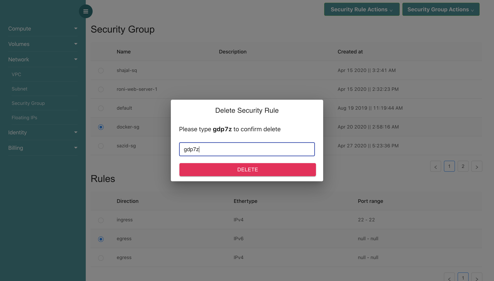

Security Group
What is Security Group?
Security groups (SGs) are associated with VM and provide security at the protocol and port access level. Each security group — working much the same way as a firewall — contains a set of rules that filter traffic coming into and out of a VM.
creating Security Group

By clicking Security Group Actions button, you can find Create Security Group option. Here, You have to give a security group name and description.
editing Seciruty Group
In Security Group Actions, You can find Edit Security Group option. In this option, you can edit security group name and description.

deleting Security Group
Deleting Security Group is straight forward. You have to just type Security Group Name for deletion.

creating Security Rules
Every Security Group should have a security rule. Security Rules are used for controlling ingress and egress traffic as well as controlling some protocols like icmp, tcp etc for accessing virtual machines.
In Security Rule Actions, you can find Create Security Rule option. You have to specify traffic ingress or egress, select protoclos, port range minimum and maximum number. Also, never forget to give some description.If you give only minimum port number, then maximum port number will be the same as minimum port number.
If you want to activate icmp protocol, you dont need to give port number. If you want to activate ssh protocol, you have to select tcp protocol and give port number 22 in minimum port range and maximum port range.


deleting Security Rules
Deleting Security Rule is straight forward.
